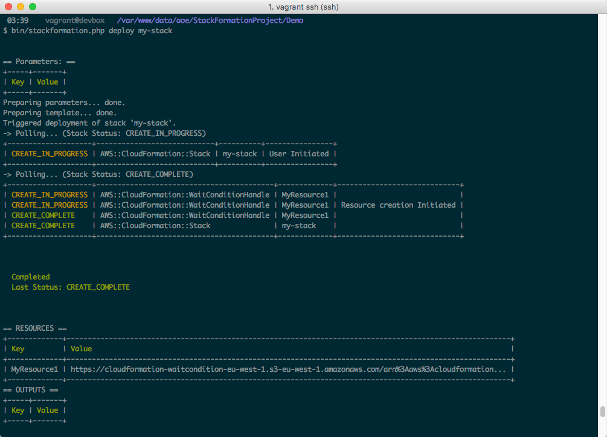

Getting Started¶
Installation¶
Using the phar¶
Grab the latest release from https://github.com/AOEpeople/StackFormation/releases/latest or use this shortcut (requires jq to be installed)
$ wget $(curl -s https://api.github.com/repos/AOEpeople/StackFormation/releases/latest | jq -r '.assets[0].browser_download_url')
Tip
If you want to use StackFormation globally:
$ mv stackformation.phar /usr/local/bin/stackformation
$ chmod +x /usr/local/bin/stackformation
Quickstart¶
AWS access keys¶
Create a .env.default file (and add it yo your gitignore: echo .env.default >> .gitignore)
AWS_ACCESS_KEY_ID=INSERT_YOUR_ACCESS_KEY_HERE
AWS_SECRET_ACCESS_KEY=INSERT_YOUR_SECRET_KEY_HERE
AWS_DEFAULT_REGION=INSERT_YOUR_DEFAULT_REGION_HERE
Create a blueprint¶
Create a blueprints.yml in your project directory:
blueprints:
- stackname: my-stack
template: my-stack.template
Create a CloudFormation template¶
Create a CloudFormation template my-stack.template in your project directory:
{
"AWSTemplateFormatVersion": "2010-09-09",
"Resources": {
"MyResource1": { "Type": "AWS::CloudFormation::WaitConditionHandle" }
}
}
Deploy your stack¶
$ bin/stackformation.php deploy my-stack
Kickstart a project¶
Imagine we are starting from scratch, on a so called green field.
$ mkdir DemoProject
$ cd DemoProject
Installation¶
First of all, we have to install StackFormation, for this demo we will da that via composer
$ composer require aoepeople/stackformation
Your first level project structure should be looking like that now
├── composer.json
├── composer.lock
└── vendor
To check if StackFormation is working properly execute the following command
$ vendor/bin/stackformation.php
You should see all available StackFormation commands and options now.
Required environment settings¶
Now create a .env.default file (and add it yo your gitignore: echo .env.default >> .gitignore)
AWS_ACCESS_KEY_ID=INSERT_YOUR_ACCESS_KEY_HERE
AWS_SECRET_ACCESS_KEY=INSERT_YOUR_SECRET_KEY_HERE
AWS_DEFAULT_REGION=INSERT_YOUR_DEFAULT_REGION_HERE
Short check¶
If your access and secret key are correct and the user behind that have enough permissions, you are now able to use the whole magic of StackFormation. Just a quick example, you want to know what and how many ec2 instances are currently running?
$ vendor/bin/stackformation.php ec2:list
Your first blueprint¶
Create a blueprints.yml in your current directory:
blueprints:
- stackname: my-stack
template: my-stack.template
Create you CloudFormation template my-stack.template:
{
"AWSTemplateFormatVersion": "2010-09-09",
"Resources": {
"MyResource1": { "Type": "AWS::CloudFormation::WaitConditionHandle" }
}
}
Deploy your stack¶
$ vendor/bin/stackformation.php deploy my-stack
The output should be the following
$ vendor/bin/stackformation.php stack:list